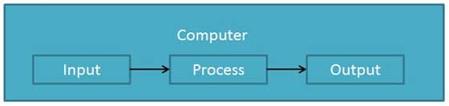
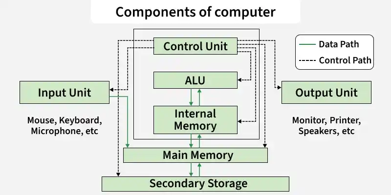
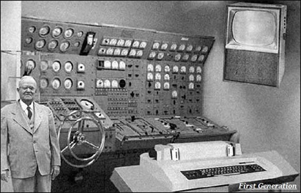
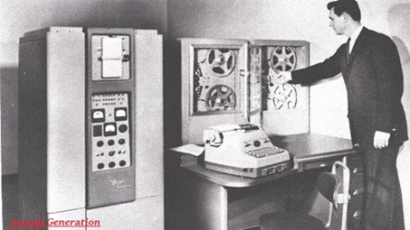
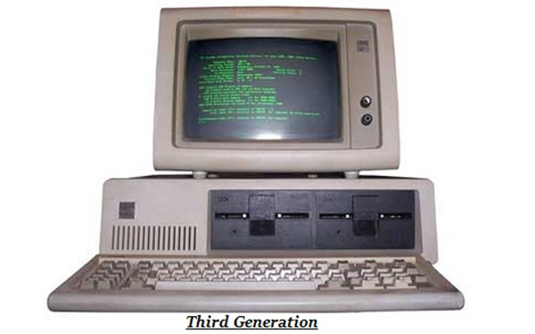
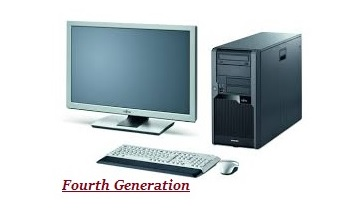
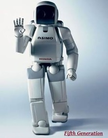

Topic 1: Introduction to Computers
What is a Computer?
In today's information-rich world, understanding computers has become a necessity for everyone. At its core, a computer is an electronic data processing device. It processes data according to instructions provided by software programs. It takes input (data), processes it using a central processing unit (CPU), stores information, and produces output (results) in a required format to perform various tasks.
Computers are widely used in fields such as education, business, communication, and entertainment for efficient and accurate operations.
Functionalities of a Computer
If we look at it in a very broad sense, any digital computer carries out the following five core functions:
- Step 1 − Takes data as input.
- Step 2 − Stores the data/instructions in its memory and uses them as required.
- Step 3 − Processes the data and converts it into useful information.
- Step 4 − Generates the output.
- Step 5 − Controls all the above four steps.

Interaction Between Software and Hardware
Hardware refers to the physical, tangible components of a computer, while software is the set of instructions that tells the hardware what to do. Without hardware, there would be no platform for software to run, and without software, hardware is just useless plastic and metal.
When you give input (e.g., typing a letter on a keyboard), the hardware (keyboard) sends this input to the software. The software then converts the input into a machine-readable language (binary) that the CPU can process. The output (e.g., the letter ‘A’) is then displayed on the screen as a result of this process.

Advantages and Disadvantages of Computers
Advantages
- High Speed: Computers can perform millions of calculations in a fraction of a second, measured in microseconds, nanoseconds, or picoseconds.
- Accuracy: Calculations are 100% error-free provided the input is correct.
- Storage Capability: Capable of storing massive amounts of any type of data (images, videos, text, audio).
- Diligence: Free from human traits like monotony, tiredness, and lack of concentration; performs repeated tasks flawlessly.
- Versatility: Flexible enough to solve complex scientific problems one moment and play a game the next.
- Automation: Once a program is stored, the computer can execute it automatically without human intervention.
Disadvantages
- No I.Q.: A computer has no independent intelligence and cannot make decisions on its own. Every instruction must be given by a human.
- Dependency: Fully dependent on human instructions and programming.
- No Feeling: Lacks emotions, judgment based on experience, or taste.
Classification of Computers
Computers can be categorized in various ways based on their functionality, size, and processing power.
1. Based on Functionality
- Analog Computers: Store data using continuous physical quantities (e.g., a mechanical integrator).
- Digital Computers: Process data using discrete values (0s and 1s). These are the most common types found today, such as your smartphone or laptop.
- Hybrid Computers: A combination of both analog and digital technologies, often used in complex medical equipment.
2. Based on Size and Power
- Microcomputers: Designed for individual use. They are small, compact systems (e.g., desktop PCs, laptops, tablets, smartphones).
- Minicomputers: Mid-sized computers historically used by businesses, now largely replaced by modern servers.
- Mainframe Computers: Large, powerful machines used by large organizations to handle massive amounts of bulk data processing.
- Supercomputers: Extremely powerful computers designed to process data at incredibly high speeds, primarily used for scientific research.

Computer Generations
The development of computers has gone through different generations, each marked by significant advancements in terms of technology and architecture.
First Generation (1940 - 1956)

- Developed using vacuum tubes (thermionic valves).
- Punched cards and paper tape were used for input/output.
- Consumed massive amounts of electricity, generated lot of heat, and were physically enormous.
- Worked strictly on binary machine code (0s and 1s).
- Examples: ENIAC, EDVAC.
Second Generation (1956 - 1963)

- Developed using transistors instead of vacuum tubes.
- Smaller in size, faster, consumed less electricity, and produced less heat.
- Magnetic core memory was introduced.
- Used in business, scientific research, and government applications.
- Examples: UNIVAC, IBM 1401, IBM 7090.
Third Generation (1963 - 1971)

- Developed using Integrated Circuits (ICs).
- Keyboard, monitor, and printer devices were introduced for input and output, replacing punched cards.
- Significantly smaller, faster, cheaper, and more reliable than previous generations.
- Widely adopted for commercial purposes.
- Examples: IBM 360, IBM 370.
Fourth Generation (1972 - 2010)

- Developed using microprocessor technology.
- Introduction of portable computers (laptops) and Personal Computers (PCs).
- Semiconductor memory (RAM, ROM) made computation incredibly fast.
- Became affordable and available to the common public.
- Examples: IBM PC, Apple II.
Fifth Generation (2010 - Present)

- Based on Artificial Intelligence (AI), Ultra Large-Scale Integration (ULSI), quantum computation, and nanotechnology.
- Capable of performing complex, multiple tasks simultaneously.
- Touchscreens, advanced scanners, and voice recognition are standard input methods.
- Examples: Modern laptops, tablets, smartphones, and smart devices.